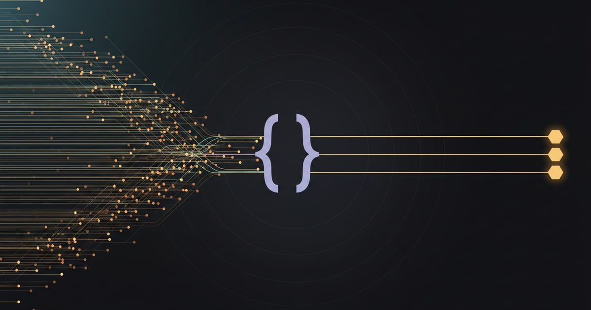

Key findings
- Controlled assistant studies generally find approximately 20–30% coding-stage gains, although results include negative effects.
- The strongest delivery evidence supports approximately 1.1–1.3× higher release output.
- The 2× and 4.5× scenarios concern narrower implementation workflows and carry substantially less confidence.
- Speed without scaled verification can displace work into review, integration, security and maintenance.
Abstract
AI-assisted software development accelerates code production more reliably than it accelerates delivery. Software development is a useful proxy for other AI-assisted business processes because its instructions, revisions and outcomes are digitally recorded. However, effect sizes cannot be transferred directly to other domains. Reliable measurement supports budgets for models, platforms, integration and verification while strengthening time-to-market business cases.
This rapid, non-protocol-registered systematic review of AI coding productivity examines 115 documents published from 1 January 2024. The corpus contains 59 empirical studies, two secondary syntheses and 54 supporting or contextual documents. Forty productivity and delivery studies contribute 42 quantitative effect estimates; another 19 examine review, quality, security, maintainability, skills and interaction cost. Evidence is grouped into three operating models:
- Assisted development: the model suggests; the developer implements and verifies.
- Spec-driven execution: the agent implements a defined outcome; a human reads and approves the result.
- Agent-native delivery: agents build, test and perform initial review; humans own intent, architecture and release.
Controlled evidence ranged from a 19% slowdown in familiar mature repositories to approximately 20–30% gains in larger enterprise trials. Higher estimates came from smaller or narrower studies. The independent meta-analysis found a moderate effect with extreme heterogeneity, while effects were materially smaller outside laboratories. In the largest matched delivery study, more than 100,000 developers produced 180% more commits but only 30% more releases and no additional application usage. Release output rose by 1.1–1.3× across successive tool generations. The review therefore uses 1.2× as a central planning case, not a universal effect.
Reference values rise with automation. They are approximately 1.25× for assisted development, 2× for bounded spec-driven execution and 4.5× for agent-native delivery. Only the first is supported by multiple controlled comparisons; the second is an interpolation and the third a low-confidence organisational upside scenario. Effects also vary with project context, programming-language feedback, developer experience and downstream verification capacity.
Short, bounded trials show that AI can make work both faster and more correct. Longer-running studies are less reassuring: higher code output can create more integration and review work, greater complexity, weaker ownership and continuing security risk. The practical risk is not speed itself, but generation growing faster than the organisation’s capacity to verify what is produced. Teams therefore need executable tests, security checks, sufficient review capacity, production monitoring and accountable ownership. These controls reduce risk but do not guarantee quality. Productivity should be measured as reliable software delivered to production, not as code volume. Faster coding creates business value only when it shortens end-to-end lead time without increasing rework or operational risk.
How was the review conducted?
What question and period did the review cover?
This rapid, non-protocol-registered systematic review asked: how does measured software-development productivity change as AI use progresses from prompt assistance to specified delegation and agent-native delivery?
The search was last run on 28 July 2026 and covered publications dated from 1 January 2024 to that date. Search combinations included AI coding assistant, developer productivity, developer experience, repository familiarity, domain expertise, coding agent, spec-driven development, agentic code review, deployment velocity, software delivery, programming language, static typing, security, maintainability and unit-test generation. Citation chasing was used to locate peer-reviewed papers, preprints, official research publications and first-party engineering reports. Where older preprint work received a 2024–2026 peer-reviewed publication, the later publication was used. Other pre-2024 work was excluded.
What evidence was eligible?
We included sources that measured an identifiable development workflow against a baseline or comparator. Surveys provided context only; unattributed marketing claims and unverifiable secondary summaries were excluded. Traceability and corrections follow Reinvently’s research and editorial standards.
Outcomes included task time, completed work, review and integration, releases and adoption. Time and output are reported separately: 25% less time implies up to 1.33× potential throughput, while 25% more output is 1.25×. Similarly, 4× throughput is a 300% increase. Commits and lines of code are treated as activity proxies rather than production value.
How was the evidence base divided?
We reviewed 115 source documents and classified them by whether they provided primary productivity evidence, evidence on adjacent outcomes, secondary synthesis or supporting context:
- 115 source documents
- 40 documents provided primary productivity and delivery evidence → 42 effect estimates
- Two studies report two materially different workflows.
- 19 documents provided adjacent-outcome evidence
- 7 review and collaboration
- 8 quality, security and maintainability
- 4 skills, experience and interaction cost
- 2 documents provided secondary syntheses
- 54 documents provided supporting context or methodological validation
- 40 documents provided primary productivity and delivery evidence → 42 effect estimates
How was the evidence weighted?
We graded each of the 59 empirical studies by confidence so stronger evidence carried more weight in the conclusions. Grades considered study design, comparator quality, outcome directness and risk of bias. Publication type—peer-reviewed paper, preprint or first-party report—did not determine the grade.
| Confidence | Included studies | Interpretation |
|---|---|---|
| High | 11 | Credible comparator, sufficiently direct outcome and no identified material risk that reverses the result |
| Moderate | 35 | Useful comparative evidence with residual bias, confounding, indirectness or precision limitations |
| Low | 13 | Historical baseline, self-report, organisational case or counterfactual estimate |
The 54 contextual documents and two secondary syntheses informed interpretation but were not graded as primary evidence.
How were findings synthesised?
The studies were too different for a meaningful pooled meta-analysis. We therefore grouped findings by degree of automation and delivery stage, converting results to output multipliers only where valid. Causal conclusions were limited to credible experimental or quasi-experimental comparisons; telemetry, historical baselines and counterfactual estimates were treated as associations or case evidence.
Each productivity conclusion can be traced from the effect estimate (E) to the empirical study (ST) and its source. Adjacent findings on review, quality, security, maintainability, skills and interaction cost link directly to their study and source.
How do reported gains vary by degree of automation?
The findings are grouped by the three operating models defined in the abstract, each representing a different degree of automation. A separate downstream-conversion section then tests how gains in coding activity survive into releases and actual use.
1. Assisted development: task completion and local output
The strongest evidence concerns assistants operating inside otherwise conventional human-led workflows. The measured effects are heterogeneous, and tool choice changes the interaction model without determining the outcome by itself. For a practical comparison of those interaction models, see GitHub Copilot vs Claude Code vs Cursor. Teams translating the evidence into a budget can use the AI coding tool cost calculator to model assisted, spec-driven and agent-native usage separately.
A randomised trial involving 96 Google engineers found that AI assistance reduced time on a complex enterprise task by an estimated 21%, although the confidence interval was wide. Three field experiments at Microsoft, Accenture and a Fortune 100 company covered 4,867 developers and found a 26.08% increase in completed tasks.
A 109-participant controlled experiment found that ChatGPT helped with simple coding puzzles but did not improve efficiency or quality on a more typical software-development task. A later controlled study of 69 participants found no strong overall time effect, but AI users achieved more than twice the median task completeness and scored 12.5% lower on code-ownership questions. Together these results show why task completion, time and understanding should be reported separately.
Two smaller crossover experiments add qualified positive evidence. In a 32-person ICSE study, an in-IDE code-understanding assistant helped participants complete 0.47 more subtasks than web search, but did not significantly change completion time or comprehension. An 18-person JavaScript study found that participants using ClueBot finished faster and made fewer errors; its small student-heavy sample and high risk of bias limit generalisation.
A larger quasi-experiment at Ant Group compared matched teams during the staged introduction of CodeFuse. Across a sample of 1,219 programmers, code output increased by 55%. More conservative specifications found gains of roughly 13–22% in tasks completed and related workflow measures. Effects were concentrated among junior developers, and lines of code remained the principal outcome.
A public-sector study by GovTech Singapore reported 21–28% faster coding and task completion with GitHub Copilot. The direction is consistent with the larger controlled studies, although the disclosed design provides less protection against selection and reporting effects.
METR examined that contrasting setting. Sixteen experienced open-source developers completed 246 real tasks in repositories they had worked in for an average of five years. With early-2025 AI tools available, they were 19% slower. Before the study they predicted a 24% speed-up; afterwards they still believed they had been 20% faster.
A separate Anthropic randomised trial found only a small, statistically non-significant task-speed improvement, while participants using AI scored 17% lower on a subsequent mastery test. This does not establish a long-term productivity loss, but it identifies skill retention as an omitted outcome in most speed studies.
Enterprise studies based mainly on self-report provide useful triangulation but weaker effect estimates. An IBM study of 669 developers found heterogeneous perceived productivity effects from watsonx Code Assistant, while a Microsoft randomised diary study found that 84% reported positive changes in daily work practices without a corresponding change in trust in generated code.
Interaction studies expose work that completion metrics miss: prompting, inspecting, editing and recovering from suggestions. Microsoft’s CUPS study of 21 programmers made those costs observable. A randomised study of proactive programming assistance found benefits but strong interface effects, while a controlled comparison found that agents reduced effort and completed some otherwise inaccessible tasks without removing the need to understand their behaviour (Code with Me or for Me?). A five-day professional field study similarly found that poorly timed proactive assistance could interrupt flow (ProAIDE), and a comparison of GitHub Copilot and Windsurf treated effectiveness as a combination of usefulness, control and coordination rather than generated volume (AI-Assisted Collaboration).
Adoption evidence helps explain these mechanisms but does not establish delivery gains. GitHub’s telemetry-linked study of 2,047 respondents associated higher completion acceptance with higher perceived productivity (Measuring GitHub Copilot’s Impact on Productivity). A peer-reviewed 410-developer usability survey identified fewer keystrokes, faster completion and syntax recall as leading benefits, but control and non-functional requirements as common failures. A 57-developer enterprise survey found that production use depended on repository context, trust and integration requirements (Vukovic et al.).
Smaller controlled studies reinforce the importance of task selection. At ANZ Bank, a six-week controlled study reported 42.3% faster completion on Python exercises. A 24-person within-subject study found higher requirements completed per minute with both conversational and completion interfaces, although its tasks were short and only nine participants were professionals (Weber et al.). In a 2026 brownfield-onboarding experiment with 24 developers, Copilot Agent reduced mean completion time by 61.7% relative to Copilot Ask and workload by 57.4%, without a significant correctness improvement.
Industrial completion systems provide credible day-to-day activity measures, although these are not product outcomes. Meta’s CodeCompose supplied 8% of accepted code for 16,000 users (FSE 2024 deployment study); extending it to multi-line suggestions nearly doubled keystrokes saved from 9% to 17% (large-scale experiment). The UK Government’s trial made 2,500 licences available and combined telemetry with surveys; participants reported approximately one hour saved per working day, but the result was self-reported rather than a causal time study.
2. Spec-driven execution: bounded delegation
At the second level, the engineer defines an outcome, constraints and acceptance checks; the agent performs multi-file implementation; the engineer still reads and owns the change. Evidence here is less controlled because organisations usually adopt several changes at once. How to Choose an AI Development Framework compares the main frameworks used to structure this kind of specification and delegation.
Salesforce reports that work items completed per developer rose 50.8% year over year, while its “Effective Output” measure rose 151.3%. Engineers remained responsible for structuring problems and evaluating results, but the organisation had also standardised tooling, expanded access and changed workflows. The figures are not an isolated test of specification.
An Amazon Prime Video Financial Systems team provides a more specific example. A senior engineer spent three weeks decomposing work and writing detailed requirements before a ten-day sprint. The team used spec-driven development for complex features and direct agent assistance where requirements were already clear. It reduced a 90-week estimate to 24 weeks—approximately 3.75× acceleration—and produced nearly six times the baseline commits.
The study conditions limit external validity: six engineers had no on-call work, no other projects, minimal meetings and no context switching. Specification was part of the system, not the only intervention.
Cisco reports teams achieving up to 3× productivity in technical-debt workflows. Its agent investigates a quality issue, produces a written plan, implements in a fresh session and opens a pull request for human review. The work is unusually deterministic, with SonarQube providing a ready-made issue description and verification layer.
Evidence on specification quality shows why “more detail” is not sufficient by itself. Copilot generated both repayments and reproductions of technical debt when prompted with 1,140 variants derived from TODO comments (O’Brien et al.). By contrast, Meta found that pre-computing context across 4,100 files reduced agent tool calls by 40%, while a separate internal agent reduced approximately ten hours of performance-regression investigation to 30 minutes (capacity-efficiency case). These first-party cases suggest that explicit context and executable feedback reduce search cost; they do not isolate specification as a causal multiplier.
A peer-reviewed ICSE 2026 study examined an expert-led, AI-implemented workflow on PicoScenes, a 1.52-million-line industrial system with a ten-year history. The authors report 68.3% less feature-implementation time, alongside 28.2% lower mean cyclomatic complexity and 50% fewer defects. The comparison concerns one system and a bundled development method, but it provides unusually detailed evidence that specified delegation can extend beyond small greenfield tasks.
Anthropic’s internal mixed-methods study offers a second organisational data point. Engineers self-reported a 50% average productivity gain as Claude use expanded, while internal telemetry showed a 67% increase in merged pull requests per engineer per day. The before-and-after design cannot isolate Claude from team growth, task selection or workflow change.
Review finding: reported outcomes support a 1.5–2.5× range for spec-driven execution with human review. The 2× midpoint is an evidence-informed interpolation, not a controlled effect estimate. Basis: E-21, E-29, E-30, E-38, E-39.
3. Agent-native delivery: production cases
The largest claims concern teams that restructure repositories, planning, testing, review and parallel execution so agents can operate for longer with less synchronous human attention. Where that design extends to several specialised agents, Multi-Agent Orchestration Frameworks Compared maps the main architectural categories and their reliability trade-offs.
AWS reports that, among 25 teams combining new tools with new practices, the median gain was 4.5× normalised deployment velocity, with some teams exceeding 10×. Its Bedrock pathfinder reported 20× normalised commit velocity, but this involved six senior engineers rebuilding a system under highly unusual conditions. Deployment velocity is the more useful number.
OpenAI describes an internal product built with no manually written code: approximately one million lines and 1,500 merged pull requests directed initially by three engineers over five months. The team estimates it took one-tenth of the manual development time. This is a serious production account with active users, but the 10× figure remains the team’s counterfactual estimate rather than an experiment.
Salesforce reports a 33-endpoint migration completed in 13 days rather than an estimated 231 person-days—an 18× task-specific acceleration. It used reference implementations, reusable rules, isolated environments and autonomous build-fix-validate loops. Migration work is repetitive and parallelisable, limiting the result’s generalisability to novel product development.
Amazon reports a broader but similarly task-specific transformation programme: Amazon Q Developer assisted upgrades of tens of thousands of production Java applications, with an estimated 4,500 developer-years saved. The estimate derives from migrated dependencies and assumed manual effort rather than a concurrent control group, so it is evidence of scale rather than a transferable acceleration factor.
Usage telemetry also shows that agentic work remains strongly shaped by human expertise. Anthropic’s analysis of approximately 400,000 Claude Code sessions found that people made most planning decisions while the agent made most execution decisions; greater domain expertise was associated with a higher probability of verifiable success.
Agent benchmarks define a capability ceiling rather than a workplace-productivity effect. SWE-Lancer maps more than 1,400 real freelance tasks to approximately $1 million of historical payouts. The ICLR 2024 SWE-bench study and SWE-agent show that repository tools and execution feedback can materially improve issue resolution. SWE-bench Multimodal exposes weaker performance on visual JavaScript tasks, while GitTaskBench adds workflow-driven repository use and an economic metric. The paired SWE-Skills-Bench result is a useful constraint: 39 of 49 packaged skills produced no pass-rate gain and average improvement was only 1.2%. None of these results can be converted directly into hours saved without a human workflow comparator.
Review finding: reported agent-native workflows cluster around 3–10×. AWS’s 4.5× median is the most suitable central reference in the available case evidence. Confidence remains low because the studies are observational, heterogeneous and frequently vendor-published. Basis: E-29, E-31, E-38–E-42.
Study results by degree of automation
The evidence changes in both magnitude and strength across the three operating models. The graph places selected implementation-stage estimates on a logarithmic ratio scale. Where a study reports time saved, the value is converted to potential throughput using the reciprocal relationship defined under outcome definitions. Every label resolves to the corresponding E entry. The values remain heterogeneous and are not pooled.
What moderates AI coding productivity and downstream delivery?
The observed effect is not determined by the degree of automation alone. Project context, downstream capacity, programming-language feedback, developer experience and verification strength change both the attainable gain and the risk carried into later stages.
Greenfield and brownfield development
Project context is a major source of heterogeneity. Greenfield work begins without legacy constraints, while brownfield work changes an existing system whose behaviour, interfaces and operational history may be only partly documented. The studies do not support a single greenfield-versus-brownfield multiplier.
The mechanism changes with the degree of automation. At Level 1, repository familiarity determines whether suggestions save search and typing or add context and verification overhead. At Level 2, specifications and executable acceptance checks can make structured brownfield changes unusually tractable. At Level 3, the strongest cases come from greenfield systems or repetitive migrations whose environments, tests and work units were redesigned for autonomous execution.
| Project context | Representative evidence | Observed effect | Interpretation |
|---|---|---|---|
| Bounded greenfield task | Controlled ChatGPT coding experiment | Helped on coding puzzles; no efficiency or quality gain on typical development work | Task realism changes the measured effect even within one experiment |
| Production greenfield system | OpenAI agent-built product | Estimated 10× reduction in development time | Large system claim, but based on a counterfactual rather than a control group |
| Unfamiliar brownfield code | Two controlled student studies | 35% faster in one study; more tests passed in both | Implementation improves without corresponding evidence of deeper code comprehension |
| Familiar, mature brownfield code | METR experienced-maintainer trial | 19% slower | Tacit knowledge and verification overhead can outweigh generation speed |
| Structured brownfield change | CodeFuse, PicoScenes and migration cases | Moderate gains to multi-fold acceleration | Existing code can be highly tractable when changes repeat and tests provide an oracle |
| Repository-wide agent adoption | Cursor matched longitudinal study | Velocity increase was large but transient | Early output gains may be offset by persistent complexity and review costs |
Two small controlled brownfield experiments make the distinction clearer. Ten undergraduates modifying an unfamiliar legacy web application completed tasks 35% faster and made 50% more solution progress with Copilot. A replication with 18 graduate students also found significantly lower task time and more tests passed, but no improvement in code comprehension. These results differ from METR’s slowdown among expert maintainers of large repositories they knew well.
Review finding: lifecycle status alone is a poor predictor. The strongest positive brownfield results occur when the task is deterministic, the relevant context can be supplied and correctness is executable. Brownfield work becomes less favourable when success depends on tacit architecture knowledge, broad side effects or expensive human verification. Basis: E-04, E-18–E-22, E-39–E-42.
Downstream conversion: from code activity to releases and use
This conversion is a cross-level outcome rather than a fourth operating model. At Level 1, local task gains must survive integration and review. Levels 2 and 3 can produce much larger increases in implementation activity, but place correspondingly greater demand on validation, release and adoption capacity.
The largest direct study of that conversion followed more than 100,000 GitHub developers using matched event studies and internal usage telemetry. Autocomplete, interactive agents and autonomous agents were associated with cumulative commit gains of 40%, 140% and 180%, respectively. The final effect was much smaller: the 180% commit increase became 50% more projects and 30% more releases, while analysis across four application marketplaces found no increase in total usage. This is the clearest evidence that code activity, shipped software and realised value are different outcomes.
Two unusually large studies find smaller average effects and strong experience differences. A peer-reviewed analysis in Science detected AI-supported Python functions across more than 30 million contributions from 160,097 developers. Within-developer models estimated a 3.6% increase in quarterly output at observed adoption levels, concentrated among experienced developers; early-career developers showed no significant gain. A regression-discontinuity natural experiment covering 187,489 developers found that Copilot access increased the relative share of coding activity by 12.37% and reduced project-management activity by 24.93%. The latter measures work allocation rather than total delivered output, but provides strong evidence that AI changes the composition of work.
Other quasi-experiments reinforce the same pattern. A generalized synthetic-control study estimated 6.5% higher project productivity and no code-quality change after Copilot adoption, but integration time increased by 41.6%. A 1,350-developer difference-in-differences study found approximately 12% more commits and 6% more active repositories, alongside a 2% rise in copy-pasted code. A workplace study using a time discontinuity estimated 6.9–8.4% higher coding productivity and 3.1–4.3% fewer working hours without a measured quality decline. Finally, a Python-versus-R natural experiment estimated 17.82% more package releases and 51% more commits in the Copilot-supported ecosystem, with gains weighted toward maintenance; differences between language communities remain an important identification caveat.
Matched and longitudinal workplace studies are less uniformly positive. Uplevel compared approximately 800 developers with and without Copilot access and found no significant change in pull-request cycle time or throughput, alongside a 41% higher bug rate. A two-year NAV study covering 26,317 commits across 703 repositories similarly found no statistically significant post-adoption activity change. By contrast, a 13-month study of three agile teams found one stable team increased delivered story points by 59.1%, with the other teams and quality measures more mixed.
Vendor telemetry shows that more code can coexist with more downstream work. Faros’s 2025 dataset of 10,000 developers and 1,255 teams associated high AI adoption with 21% more completed tasks and 98% more merged pull requests, but also 91% longer review time and no organisation-level DORA improvement. Its later two-year study of 22,000 developers and 4,000 teams found 33.7% more completed tasks and 16.2% faster merges, alongside 861% more code churn and 242.7% more incidents per pull request. These studies disclose large samples but remain observational and are published by an engineering-intelligence vendor.
Other large datasets point in the same two-sided direction. DX reports, from 135,000 developers in 425 organisations, an average 3.6 hours saved per week and 60% more pull requests among daily users. Jellyfish reports that the highest-adoption cohort across more than 200,000 engineers shipped 56% more epics per 100 engineers and used 25% fewer person-months per epic. Neither comparison randomly assigned AI use, so selection, team maturity and task mix remain plausible explanations.
Developer surveys explain why perception and telemetry diverge. In Stack Overflow’s 2024 survey, 81% named productivity as a benefit. By 2025, 69% of agent users reported increased productivity, yet 46% distrusted AI accuracy and 45% said debugging AI-generated code was time-consuming. These are valuable population signals, not estimates of causal speed.
Large first-party surveys provide adoption context rather than causal estimates. GitHub’s 2024 international survey documents perceived effects on flow, cognitive effort and collaboration. JetBrains’ 2025 Developer Ecosystem survey and Atlassian’s 3,500-person developer-experience survey broaden that picture. Anthropic’s analysis of 500,000 coding interactions found that Claude Code use was predominantly automation rather than augmentation. None of these designs establishes an output multiplier.
The same distinction matters outside engineering telemetry: an organisation can report faster local work without obtaining adoption or financial value. The Enterprise AI Reality Check examines that wider gap between tool deployment, workflow change, measurement and realised return.
Review finding: the controlled evidence centres near 1.25× output, with a range that includes negative effects. Large comparative studies then show substantial attenuation between code activity and shipped value. In the largest matched event study, release effects were approximately 1.1× for autocomplete, 1.2× for interactive agents and 1.3× for the cumulative autonomous-agent stack. For budgeting and time-to-market analysis, 1.1–1.3× release output, centred on 1.2×, is the more defensible base range; 2–4.5× remains implementation-stage upside requiring workflow redesign and independent verification. Task fit, repository maturity, developer familiarity and downstream capacity explain more of the variation than tool availability alone. Basis: E-01–E-20, E-23–E-28, E-32–E-37.
Programming language is a moderator, but “strongly typed is faster” is not yet established
The language hypothesis is plausible: a compiler or type checker gives an agent a cheap, deterministic signal before a human reads the patch. Google’s production completion system supports the mechanism. In Go, approximately 8% of raw suggestions failed to compile; semantic checks filtered 80% of those failures, and acceptance grew by 1.9× after the checks were introduced, compared with 1.3× in languages without them. This is evidence that compiler-like feedback improves an AI workflow—not that static typing alone increases end-to-end developer productivity.
Its role grows with automation. At Level 1, compiler and linter feedback filters suggestions before the developer accepts them. At Level 2, those checks become executable acceptance constraints for a multi-file change. At Level 3, they form part of the agent’s build–test–repair loop and reduce how often a human must inspect obviously invalid states.
Cross-language evaluations show genuine variation, but not a simple static-versus-dynamic ranking. An evaluation across 19 programming languages found above-average results for several statically typed, lower-abstraction languages. A study of all 2,033 LeetCode problems found substantial correctness differences across C, Java, JavaScript and Python. The newer SWE-bench Multilingual, Multi-SWE-bench and OmniCode evaluations likewise show materially different resolution rates by language and task. In OmniCode, for example, SWE-agent’s best Java test-generation result was only 20.9%.
Language familiarity and training-data density can move in the opposite direction to type-system strength. A controlled cross-language trajectory study found large differences in token consumption across Python, Java, Rust and OCaml, with agents repeatedly producing non-compiling solutions in less familiar languages. A Java unit-test study found that type-rich context helped, but generated tests still suffered from compilation and oracle errors (EASE 2024 evaluation). TypePilot provides more direct evidence that a Scala type system can constrain insecure generations, although it evaluates generated-code robustness rather than developer time.
Review finding: treat the language as part of the verification harness. Static types, exhaustive compilers and mature linters should reduce the cost of rejecting a bad change, while popular ecosystems may improve generation quality through better training coverage. No identified field experiment isolates static typing as a causal productivity multiplier.
Developer experience changes where AI helps
“Experience” is not one variable. General coding tenure, familiarity with a particular repository and knowledge of the problem domain can produce different effects. In assisted-development trials, less-experienced developers often gain more. The three randomised field experiments covering 4,867 developers found higher adoption and larger productivity gains among less-experienced developers. In the CodeFuse field experiment, the measured output increase was concentrated among junior programmers, despite minimal junior–senior differences in suggestion acceptance.
Repository familiarity can reverse that pattern. METR’s experienced maintainers were 19% slower on repositories they had worked in for an average of five years, while two small studies of developers modifying unfamiliar brownfield applications found faster completion and more tests passed. This does not show that novices outperform experts. It suggests that assistance is more valuable when the tool supplies missing context, but can impose prompting and verification overhead when a developer already holds a strong mental model of the code.
At higher degrees of automation, domain expertise becomes more—not less—important. In Anthropic’s analysis of approximately 400,000 Claude Code sessions, novice-rated sessions reached verified success 15% of the time, compared with 28–33% for intermediate-to-expert sessions. When sessions encountered trouble, verified recovery rose from 4% for novices to 15% for experts. The authors found that task-specific expertise predicted success more strongly than working in a software occupation, although the outcomes were inferred from transcripts and telemetry rather than production value.
The relationship is therefore not a simple equalising effect. A study of more than 160,000 open-source developers found that observed contribution gains were concentrated among experienced developers, with no significant gain among early-career developers. Different tasks, experience measures and workflows explain part of the apparent contradiction.
Qualitative and longitudinal studies describe the same shift from implementation toward supervision. Experienced professionals retain control over architecture and quality rather than relying on unconstrained “vibe coding” (Huang et al.). A six-month panel found 84% reporting productivity improvement at both waves, while worsened developer experience nearly doubled in the matched cohort (Vella and Blincoe). Microsoft’s SPACE study of more than 500 developers found benefits concentrated in routine work and weaker evidence for collaboration, while repository traces show use extending well beyond code generation (self-admitted open-source usage study).
Review finding: less-experienced developers may gain more from Level 1 assistance on bounded tasks, while experts may gain little—or slow down—when assistance disrupts work in a familiar repository. At Levels 2 and 3, domain knowledge improves specification, steering, exception handling and verification. Experience should therefore be measured as coding tenure, repository familiarity and domain expertise, not a single seniority label.
Automated review is necessary—but not a 4× cause
Review responsibility changes with the degree of automation. At Level 1, the developer inspects suggestions while implementing the change. At Level 2, a human reviews and owns a completed agent-authored change. At Level 3, automated review becomes a first-pass control before accountable human approval. The third-level increase cannot be attributed to automated review alone, and the available evidence does not isolate review as a causal factor.
OpenAI’s guide to AI-native engineering says automated review gives engineers more confidence that major bugs are caught, but does not necessarily make the pull-request process faster. Humans still need to understand the implications and own the merge.
A 2026 study of 31,073 CodeRabbit review comments across 10,191 pull requests found that only 36.4% were accepted, while 56.3% were rejected. Common reasons included false positives, redundant comments and suggestions outside the intended scope.
Atlassian reports a more favourable result from a tightly integrated review system. Its year-long evaluation across more than 1,900 repositories found that RovoDev reduced pull-request cycle time by 30.8% and human-written review comments by 35.6%; 38.7% of its comments triggered a subsequent code change. The paper was accepted to the ICSE 2026 Software Engineering in Practice track, but the evaluation was observational and conducted by the tool’s developer.
The review bottleneck is real. A GitLab survey of 1,528 developers and technology buyers found that 85% agreed AI had shifted the bottleneck from writing code to review and validation. But survey agreement is not proof that an automated reviewer removes it.
Large-scale repository studies show why review results depend on task and governance. A study of 40,214 human- and agent-authored pull requests found materially different collaboration patterns when agents authored the change. A separate analysis of 7,156 agent-authored pull requests found that acceptance varied more by task type than by agent: documentation reached 82.1%, compared with 66.1% for new features. Early-adoption research covering 25,264 agentic pull requests found that most repositories still produced only one or two agent-authored pull requests over three months and relied predominantly on a single human reviewer.
The broader repository record confirms that acceptance is not equivalent to wholesale integration. AIDev catalogues 932,791 agent-authored pull requests across 116,211 repositories. A study of 9,427 agentic pull requests found that core developers more consistently required passing CI before acceptance (Cynthia et al.), while a longitudinal comparison tracks changing mergeability, complexity and defect proneness in agent- and human-authored pull requests (Morovati et al.). PatchTrack found a median of only 25% of suggested code integrated across 338 pull requests; developers usually extracted, adapted or rejected parts of a patch. These studies do not estimate causal speed, but show why generated or accepted code volume can overstate delivered value.
Interventions at narrower review stages show both useful automation and displacement. Across 18,256 pull requests, AI-generated descriptions were associated with shorter review time and a higher merge probability. At Google, ML-generated edits now resolve 7.5% of reviewer comments, an effect estimated to save hundreds of thousands of engineer hours annually at that scale. AutoCommenter was deployed across four languages to tens of thousands of Google developers and produced a measurable workflow benefit, although the published study does not translate it into an end-to-end speed multiplier (industrial evaluation).
Negative and null results are equally instructive. In Beko’s ten-project deployment, developers resolved 73.8% of automated comments, but median pull-request closure increased from 5 hours 52 minutes to 8 hours 20 minutes (Automated Code Review in Practice). Meta’s review-comment patch system initially made reviewers more than 5% slower; moving suggestions from reviewers to authors removed that regression, and the final system achieved a 19.7% actionable-to-applied rate (randomised safety trials and production experiment).
The high-performing cases combine review with deterministic tests, static analysis, isolated environments, repository rules, short feedback loops and human ownership. Review is one control in a harness; How to Sandbox AI Agent Code compares practical isolation boundaries for the execution layer.
Review finding: automated review is a scaling control whose importance increases with the degree of automation—not a demonstrated cause of a 4× gain. At Level 1, narrow review automation can remove routine work but can also interrupt or slow the developer. At Level 2, it should reject deterministic defects before accountable human review. At Level 3, it is necessary to prevent generated volume overwhelming review capacity, but current systems still reject or fail to action many comments and do not remove the need for human approval. No identified study isolates automated review as an end-to-end productivity multiplier. Basis: ST-41–ST-47, ST-51–ST-52.
Quality effects are mixed and may emerge later
Speed and throughput do not fully describe the productivity effect, and the quality risk changes with the degree of automation. At Level 1, a developer can reject a bad suggestion before it becomes a change. At Level 2, larger agent-authored patches increase the amount of behaviour a human must verify. At Level 3, generation and initial review both scale, making independent tests, security controls, monitoring and ownership part of the operating model rather than optional safeguards. A GitHub randomised controlled trial with 202 experienced developers found that Copilot users were 53.2% more likely to pass all ten unit tests. Blind review also found small but statistically significant improvements in readability, reliability, maintainability and conciseness.
Longitudinal evidence is less uniformly positive. A matched difference-in-differences study of 806 repositories found that adopting Cursor produced a large but transient increase in development velocity, while static-analysis warnings and code complexity increased persistently. Another open-source study found that, after Copilot adoption, core developers reviewed 6.5% more code while producing 19% less original code, consistent with maintenance work being redistributed rather than removed.
A controlled maintenance experiment provides a useful boundary on that interpretation. When 75 participants evolved code written by someone else, the speed advantage for maintaining AI-assisted code was small and statistically unreliable. A separate analysis of 304,362 verified AI-authored commits found that more than 15% introduced at least one detectable issue, and 24.2% of the tracked issues remained at the latest repository revision.
Security evaluations consistently reject the assumption that compilable means safe. Copilot produced vulnerable output in approximately 40% of 1,689 programs in the peer-reviewed “Asleep at the Keyboard” study. A 2024 replication found a lower but still substantial 27.25% vulnerable share. In real repositories, security weaknesses affected 29.5% of observed Python snippets and 24.2% of JavaScript snippets (Fu et al.), while a 44-developer controlled study found no significant improvement in secure API use (Mousavi et al.).
The surrounding risks create verification work. Across 16 coding models, package hallucinations averaged 19.6%. A 2024 USENIX evaluation found that LLMs could assist code analysis but remained unreliable across tasks (Fang et al.). Newer security-by-default work improved secure generation by up to 2.5× across six models and four security-critical languages, but this is a model-level benchmark rather than evidence that deployed teams experience fewer incidents (GoodVibe). The strongest conclusion is therefore not that AI necessarily increases production bugs, but that generated code retains material defect and vulnerability risk and requires an explicit verification budget.
Automated tests can recover part of this cost, but generated tests need their own oracle. TestPilot generated JavaScript tests with median statement coverage of 70.2% in its 2024 journal publication. ChatTESTER increased compilable tests by 34.3% and tests with correct assertions by 18.7% relative to direct ChatGPT generation (FSE 2024 study). A broader evaluation across 17 Java projects found that prompt content and model choice materially changed outcomes (Yang et al.). The productive mechanism is therefore the executable feedback loop, not test text generation alone.
Repository telemetry indicates that these costs may emerge slowly. GitClear’s analysis of 153 million changed lines found rising churn and copy-paste activity as AI adoption grew, although it could not identify AI authorship causally. DORA’s 2024 cross-organisation analysis associated a 25% increase in AI adoption with better documentation, code quality and review speed, but also 1.5% lower delivery throughput and 7.2% lower stability. These are associations, but they illustrate why local speed and delivery performance must be measured separately.
Google’s 2025 DORA research develops that finding: AI appears to amplify existing organisational strengths and weaknesses, with higher adoption associated with both greater throughput and greater instability. The appropriate comparison is therefore not simply with and without AI, but the same degree of automation under stronger and weaker delivery systems.
Collectively, these studies indicate that short-task quality can improve while repository-level complexity, persistent defects and expert review load still rise over time. This distinction is especially consequential in brownfield systems, where each accepted change becomes part of the next task’s context. AI-Assisted Web Development: Where It Helps and Where It Fails applies the same boundary to pattern-heavy work that is easy to verify and judgement-heavy work where plausible output can hide defects.
Review finding: faster generation does not inevitably reduce quality, but the evidence does not support treating quality as constant across degrees of automation. Level 1 trials can improve immediate correctness on bounded tasks while longitudinal studies still detect complexity, maintenance and security costs. At Levels 2 and 3, larger agent-authored changes expand the verification surface; maintaining quality requires independent tests, security controls, monitoring and accountable ownership to scale with generation. No identified study demonstrates that quality remains stable at the article’s 2× or 4.5× implementation scenarios. Basis: ST-22, ST-27, ST-48–ST-50, ST-53–ST-55.
Productivity effect register and confidence assessment
| IDs | Study and outcome | Design | Effect | Confidence | Main limitation |
|---|---|---|---|---|---|
ST-01E-01 | Google enterprise RCT — task time | Randomised field experiment | 21% less time | High | 96 engineers; wide confidence interval |
ST-02E-02 | Microsoft/Accenture/F100 — completed tasks | Controlled field experiments | +26.08% | High | Effects varied between companies |
ST-03E-03 | Rocks Coding, Not Development — task performance | Controlled experiment | Coding gain; no development-task gain | High | 109 participants; assigned tasks |
ST-04E-04 | METR — mature-repository task time | Randomised experiment | 19% slower | High | 16 expert maintainers; early-2025 tools |
ST-05E-05 | PACIS assistant–agent trial — completion time | Controlled experiment | 61.7% less time | High | 24 developers; assistant comparator |
ST-06E-06 | ANZ Bank — Python-task completion | Controlled experiment | 42.3% faster | High | Exercises followed tool training |
ST-07E-07 | Weber et al. — requirements per minute | Within-subject experiment | Significant increase | High | 24 participants; mostly junior |
ST-08E-08 | More Code, Less Understanding — task completeness | Controlled experiment | >2× median completeness | High | No strong overall time effect |
ST-09E-09 | GILT — code-understanding progress | Crossover trial | +0.47 subtasks; no time gain | Moderate | 32 participants; high risk of bias |
ST-10E-10 | ClueBot — JavaScript time and errors | Crossover experiment | Less time; fewer errors | Moderate | 18 participants; student-heavy sample |
ST-11E-11 | Writing Code vs. Shipping Code — commits, releases and use | Matched event study | +180% commits; +30% releases; no usage gain | Moderate | Adoption remains non-random |
ST-12E-12 | Global diffusion and impact — quarterly contributions | Within-developer fixed effects | +3.6% | Moderate | AI authorship inferred on public GitHub |
ST-13E-13 | Generative AI and the Nature of Work — work allocation | Regression discontinuity | +12.37% coding share | Moderate | Task mix, not final output |
ST-14E-14 | Collaborative open source — project output and integration | Generalised synthetic control | +6.5%; integration time +41.6% | Moderate | Adoption inferred |
ST-15E-15 | Copilot X — commits and repositories | Matched difference-in-differences | +12% commits; +6% repositories | Moderate | Copy-paste also rose |
ST-16E-16 | Workplace AI-coder deployment — productivity index | Regression discontinuity in time | +6.9–8.4% | Moderate | Time discontinuities permit confounding |
ST-17E-17 | Python–R natural experiment — releases and commits | Difference-in-differences | +17.82% releases; +51% commits | Moderate | Language ecosystems may differ |
ST-18E-18 | Ant Group CodeFuse — code and workflow | Matched field experiment | +55% code; +13–22% workflow | Moderate | Code volume was primary |
ST-19E-19 | Brownfield undergraduate study — task time | Controlled experiment | 35% faster | Moderate | Ten students; narrow application |
ST-20E-20 | Brownfield replication — time and tests | Within-subject experiment | Faster; more tests passed | Moderate | No comprehension gain |
ST-21E-21 | PicoScenes — implementation time | Comparative industrial case | 68.3% less time | Moderate | One system; bundled method |
ST-22E-22 | Cursor repositories — velocity | Matched longitudinal study | Large, transient increase | Moderate | Observable adopters only |
ST-23E-23 | Meta multi-line completion — keystrokes saved | Large-scale online experiment | 9–17% | Moderate | Local activity proxy |
ST-24E-24 | Uplevel — PR cycle and throughput | Matched observational study | No significant change | Moderate | Observational assignment |
ST-25E-25 | NAV — commit activity | Longitudinal repository study | No significant change | Moderate | 25 users; self-selection |
ST-26E-26 | Three agile teams — story points | Longitudinal multi-case study | +59.1% in one team | Moderate | One stable comparison |
ST-27E-27 | Echoes of AI — task time | Comparative experiment | 30.7% lower median time | Moderate | Participants chose workflow |
ST-28E-28 | GovTech Singapore — task speed | Structured field study | 21–28% faster | Low | Limited comparative detail |
ST-29E-29 | Salesforce agentic SDLC — effective output | Before-and-after telemetry | +151.3% | Low | Many simultaneous changes |
ST-30E-30 | Anthropic adoption — merged PRs | Before-and-after telemetry | +67% | Low | Telemetry plus self-report |
ST-31E-31 | AWS 25 teams — deployment velocity | Multi-team organisational telemetry | Median 4.5× | Low | Not randomised; limited method |
ST-32E-32 | UK Government — reported time saved | Voluntary workplace trial | About one hour per day | Low | Self-reported time |
ST-33E-33 | Meta CodeCompose — accepted-code share | Deployment telemetry | 8% of code | Low | Activity proxy |
ST-34E-34 | Faros 2025 — tasks, PRs and review | Observational telemetry | +21% tasks; +98% PRs | Low | Review time rose 91% |
ST-35E-35 | Faros 2026 — delivery telemetry | Longitudinal telemetry | +33.7% tasks; 16.2% faster merges | Low | Churn and incidents rose |
ST-36E-36 | DX Q4 2025 — time and PR output | Survey plus telemetry | 3.6 hours/week; +60% PRs | Low | Non-random usage |
ST-37E-37 | Jellyfish — epics and effort | Adoption-cohort analysis | +56% epics; −25% effort | Low | High-adoption cohort may differ |
ST-31E-38 | AWS Prime Video — forecast duration | Disclosed case estimate | 3.75× | Low | Comparator was a forecast |
ST-38E-39 | Cisco — tech-debt workflow | Disclosed production case | Up to 3× | Low | Deterministic issue class |
ST-39E-40 | OpenAI — estimated project time | Counterfactual case estimate | 10× | Low | No control |
ST-29E-41 | Salesforce migration — task duration | Counterfactual case estimate | 18× | Low | Repetitive, parallelisable work |
ST-40E-42 | Amazon Q migration — estimated effort | Counterfactual portfolio estimate | 4,500 developer-years | Low | Dependency-based estimate |
Limitations of the AI coding productivity evidence
This rapid systematic review was not protocol-registered and did not include a formal risk-of-bias instrument. Searches prioritised English-language, web-accessible studies and first-party disclosures; relevant unpublished evaluations may therefore be absent. The corpus is broad rather than exhaustively database-indexed. Publication bias is likely to be strongest in the agent-native tier, where organisations have an incentive to publish exceptional successes.
The number of independent causal estimates is much smaller than the total literature. A productivity-focused systematic review identified 39 peer-reviewed primary studies published through December 2024, using a broader productivity definition than this review’s quantitative comparator rule. A newer preregistered meta-analysis of 14 productivity studies estimated a moderate pooled effect (Hedges’ g = 0.33) with extreme heterogeneity (I2 = 99%); laboratory effects were larger than enterprise and open-source effects.
The corpus could be made larger by admitting more benchmark-only evaluations, student exercises without a human baseline, vendor surveys or narrow task studies. Those documents can explain mechanisms and boundaries, but counting them as equivalent productivity evidence would reduce rather than improve the review’s precision.
The evidence base is too heterogeneous for a pooled effect estimate. Controlled studies mostly evaluate individual assistance, while agent-native reports measure teams, workflows or individual migrations. Historical estimates can also change after a project begins, and commit or line-volume measures may reward activity rather than value. Greenfield and brownfield labels were assigned from the disclosed project setting and were not always prespecified by study authors. Experience measures also differ: job tenure, coding tenure, repository familiarity and task-specific expertise are not interchangeable. Programming-language studies predominantly measure correctness, compilation or benchmark success rather than developer time, so the language analysis is mechanistic and exploratory. The three-level autonomy taxonomy was applied for this review and has not itself been independently validated.
Benchmark quality adds a separate constraint. OpenAI found contamination and test-design problems severe enough to stop using SWE-bench Verified, then estimated that approximately 30% of SWE-Bench Pro tasks were broken in a separate agent-assisted audit and human annotation study. Benchmark progress shows that agents can perform longer tasks under controlled conditions; it cannot be converted directly into hours saved without a human workflow comparator.
How should organisations measure AI coding productivity?
The literature would benefit from staged comparisons of representative work rather than further surveys of perceived speed. A robust organisational study would:
- Select repeated task classes with sufficient history for a baseline.
- Measure accepted intent through production operation, rather than coding time alone.
- Separate active human time, elapsed time and agent runtime.
- Include review rounds, escaped defects, rollback and rework.
- Compare similar tasks at assisted, spec-driven and agent-native levels.
- Report the model, repository characteristics, team composition, coding tenure, repository familiarity and domain expertise.
Relevant outcome measures include lead time, work items deployed, change failure rate, reviewer minutes, post-merge rework and production incidents. Commits can diagnose activity, but are not an adequate primary productivity outcome. For a worked example of holding variables constant, exposing uncertainty and separating raw results from interpretation, see Building the Ed-o-meter: Notes on Writing My Own LLM Benchmark.
What does the evidence support?
The central finding is a conversion problem. AI can substantially increase implementation output, but the gain often shrinks across understanding, integration, review, testing, release and adoption. The largest matched study illustrates that loss (E-11): 180% more commits became only 30% more releases and no increase in application usage. The independent meta-analysis points to the same boundary. Average productivity improves, but effects are much smaller in enterprise and open-source settings than in controlled laboratories.
For end-to-end planning, the largest matched delivery study observed approximately 1.1×, 1.2× and 1.3× release output across successive tool generations. This review therefore uses 1.2× as an evidence-anchored central planning case. The estimate is driven principally by E-11 and triangulated against E-14–E-17; it is not a pooled or universal effect.
Larger figures describe narrower implementation stages. Conventional assistant use has a reference value of approximately 1.25×, while bounded spec-driven work has a conditional 2× hypothesis. Agent-native delivery has a low-confidence 4.5× upside scenario. These values should not be applied to the whole delivery system, and increasing autonomy does not itself establish causation. The largest outcomes combine models with redesigned repositories, specifications, environments, tests, review and parallel execution.
The evidence also rejects a simple speed-versus-quality trade-off. Short, bounded tasks can become both faster and more correct. The recurrent risk is asymmetry: generation scales before verification and moves costs into integration, review, churn, complexity, security and weaker code ownership. Speed without scaled verification can therefore come at the expense of quality. Robust review and verification are required at higher generation rates. However, the evidence does not show that these controls guarantee quality, particularly under the 2× and 4.5× scenarios.
Project lifecycle alone is a poor predictor. Greenfield work has less legacy coupling but often lacks historical baselines and inherited test suites. Brownfield work has more constraints, although repetitive migrations and well-instrumented changes can still be highly tractable. Experience also changes the effect. Bounded Level 1 trials often favour less-experienced developers, while familiar-repository experts can slow down. Domain expertise becomes more valuable as automation increases. The more useful distinctions are tacit versus explicit context, subjective versus executable acceptance and generated versus independently verified output.
For investment decisions, the unit of analysis should be the verified outcome in production. A credible business case should include model and platform costs, integration effort, reviewer capacity, rework and incidents. It should then estimate how much coding-time savings reach release and customer use. Time-to-market claims should use lead time through production operation; commits, lines of code and self-reported hours are insufficient.
As automation increases, AI coding becomes a systems-engineering problem. The limiting factor is no longer only how quickly a model can generate code. It is how effectively an organisation can specify, verify, integrate and release correct work.
Evidence and document registers
The registers preserve the review chain from included study to source document. Study confidence is summarised in the method and recorded for quantitative estimates in the productivity effect register. Supporting and contextual documents are not graded as productivity evidence.
A. Included empirical studies (59)
Show the 59 studies ordered by study ID
ST-01— How much does AI impact development speed? — Google enterprise RCT.ST-02— The Effects of Generative AI on High-Skilled Work — Microsoft, Accenture and Fortune 100 field experiments.ST-03— Rocks Coding, Not Development: A Human-Centric, Experimental Evaluation of LLM-Supported SE Tasks.ST-04— Measuring the Impact of Early-2025 AI on Experienced Open-Source Developer Productivity — METR.ST-05— From Assistants to Agents: Exploring Efficiency and Human Agency in AI-Supported Programming.ST-06— The Impact of AI Tool on Engineering at ANZ Bank.ST-07— Significant Productivity Gains through Programming with Large Language Models.ST-08— More Code, Less Understanding? On the Impact of AI Assistants on Developers’ Productivity and Code Ownership.ST-09— Using an LLM to Help With Code Understanding — Google and Carnegie Mellon University.ST-10— ClueBot: A Conversational Agent to Assist in JavaScript Programming.ST-11— Writing Code vs. Shipping Code: The Impact of AI on Software Development — matched event study of more than 100,000 developers.ST-12— The Global Diffusion and Impact of Artificial Intelligence Writing Code — Science.ST-13— Generative AI and the Nature of Work.ST-14— The Impact of Generative AI on Collaborative Open-Source Software Development.ST-15— The Impact of Generative AI on Software Development: Evidence from GitHub Copilot X.ST-16— The Productivity Effects of Generative AI: Evidence from a Workplace Deployment of an AI Coder.ST-17— The Impact of Generative AI on Open-Source Software Development.ST-18— Generative AI and labour productivity: a field experiment on coding — BIS and Ant Group CodeFuse study.ST-19— The Effects of GitHub Copilot on Computing Students in Brownfield Programming Tasks.ST-20— Comprehension–Performance Gap in GenAI-Assisted Brownfield Programming.ST-21— Less Effort, More Productivity: Lessons Learned from Developing Millions of Lines of Code with Large Language Model — ICSE 2026.ST-22— Speed at the Cost of Quality? The Impact of LLM Agent Assistance on Software Development.ST-23— Multi-line AI-assisted Code Authoring — Meta.ST-24— Does GenAI Improve Software Developer Productivity? — Uplevel Data Labs.ST-25— Longitudinal GitHub Copilot Adoption at NAV IT.ST-26— Longitudinal Multi-case Study of AI-assisted Agile Teams.ST-27— Echoes of AI: Investigating the downstream effects of AI assistants on software maintainability.ST-28— Harnessing the Potential of Gen-AI Coding Assistants in Public Sector Software Development — GovTech Singapore.ST-29— Pioneering the Agentic Shift Within Salesforce Engineering.ST-30— How AI Is Transforming Work at Anthropic — survey, interviews and internal telemetry.ST-31— How frontier teams are reinventing AI-native development — AWS.ST-32— AI Coding Assistant Trial: UK Public Sector Findings.ST-33— AI-assisted Code Authoring at Scale — Meta CodeCompose, FSE 2024.ST-34— The AI Productivity Paradox — Faros 2025.ST-35— AI Acceleration Whiplash — Faros 2026.ST-36— State of AI-assisted Engineering, Q4 2025 — DX.ST-37— Are AI Coding Tools Making Companies More Productive? — Jellyfish.ST-38— AI-First Engineering: How Cisco Reached Tech Debt Zero — SonarSource case study.ST-39— Harness engineering: leveraging Codex in an agent-first world — OpenAI.ST-40— Amazon Q Developer just reached a $260 million milestone — AWS production migration disclosure.ST-41— RovoDev Code Reviewer: A Large-Scale Online Evaluation — Atlassian and Monash University, ICSE 2026.ST-42— Is Agentic Code Review Helpful?ST-43— When Code Authors Are Agents: A Large-Scale Study of Human–Agent Collaboration in Pull Requests.ST-44— Comparing AI Coding Agents: A Task-Stratified Analysis of Pull Request Acceptance.ST-45— Early Adoption of Agentic Coding Tools by GitHub Projects.ST-46— AI-generated Pull-request Descriptions and Review Outcomes.ST-47— Automated Code Review in Practice.ST-48— Does GitHub Copilot improve code quality? — GitHub randomised controlled trial.ST-49— AI-assisted Programming May Decrease the Productivity of Experienced Developers by Increasing Maintenance Burden.ST-50— Debt Behind the AI Boom: A Large-Scale Empirical Study of AI-Generated Code in the Wild.ST-51— AI-assisted Assessment of Coding Practices in Industrial Code Review — Google AutoCommenter.ST-52— AI-Assisted Fixes to Code Review Comments at Scale — Meta.ST-53— Asleep at the Keyboard? Assessing the Security of GitHub Copilot’s Code Contributions — Communications of the ACM.ST-54— Understanding the Impact of AI Code Assistants on Security API Usage.ST-55— GoodVibe: Security-by-Vibe for LLM-Based Code Generation — USENIX Security 2026.ST-56— How AI assistance impacts the formation of coding skills — Anthropic randomised trial.ST-57— Examining the Use and Impact of an AI Code Assistant in the Enterprise — IBM Research, CHI 2025.ST-58— Dear Diary: A Randomized Controlled Trial of Generative AI Coding Tools in the Workplace — Microsoft Research, ICSE 2025.ST-59— Reading Between the Lines: Modeling User Behavior and Costs in AI-Assisted Programming.
B. Systematic reviews and meta-analyses (2)
Show the 2 systematic reviews and meta-analyses
C. Supporting and contextual documents (54)
Show the 54 supporting documents alphabetically
- A Large-Scale Survey on the Usability of AI Programming Assistants — ICSE 2024.
- Agentic coding and persistent returns to expertise — analysis of approximately 400,000 Claude Code sessions.
- AI Accountability Report — GitLab and The Harris Poll.
- AI-Assisted Collaboration: Exploring Developer Experience with GitHub Copilot and Windsurf.
- AIDev: Studying AI Coding Agents on GitHub.
- An Empirical Evaluation of LLMs for Automated Unit Test Generation — IEEE TSE 2024.
- Anthropic Economic Index: AI’s Impact on Software Development.
- Are Prompt Engineering and TODO Comments Friends or Foes?.
- Are We All Using Agents the Same Way?.
- Assessing and Analyzing the Correctness of GitHub Copilot’s Code Suggestions.
- Assessing the Security of GitHub Copilot Generated Code: A Targeted Replication — SANER 2024.
- Building an AI-native engineering team — OpenAI.
- Code with Me or for Me? How Increasing AI Automation Transforms Developer Workflows.
- Coding on Copilot: 2024 Developer Research — GitClear.
- Developer Ecosystem Survey 2025 — JetBrains.
- Developer Interaction Patterns with Proactive AI: A Five-Day Field Study.
- Developers and Generative AI: A Study of Self-admitted Usage in Open Source Projects.
- DORA Accelerate State of DevOps Report 2024.
- Evaluating and Improving ChatGPT for Unit Test Generation — FSE 2024.
- Evaluation of ChatGPT-4 Code Generation Across 19 Programming Languages.
- GitTaskBench.
- How Do AI Coding Agents Contribute to Software Development?.
- How Meta Used AI to Map Tribal Knowledge in Large-scale Data Pipelines.
- How Unified AI Agents Optimise Performance at Hyperscale — Meta.
- Introducing the SWE-Lancer Benchmark — OpenAI.
- Large Language Models for Code Analysis: Do LLMs Really Do Their Job? — USENIX Security 2024.
- Measuring GitHub Copilot’s Impact on Productivity.
- Multi-SWE-bench: A Multilingual Benchmark for Issue Resolving.
- Need Help? Designing Proactive AI Assistants for Programming.
- OmniCode: A Benchmark for Evaluating Software Engineering Agents.
- On the Evaluation of Large Language Models in Unit Test Generation.
- PatchTrack: A Comprehensive Analysis of ChatGPT’s Influence on Pull-request Outcomes.
- Professional Software Developers Don’t Vibe, They Control.
- Resolving Code Review Comments with Machine Learning — Google.
- Security Weaknesses of Copilot-Generated Code in GitHub Projects — ACM TOSEM 2025.
- Separating Signal from Noise in Coding Evaluations — OpenAI.
- Stack Overflow Developer Survey 2024: AI.
- Stack Overflow Developer Survey 2025: AI.
- State of AI-assisted Software Development 2025 — DORA.
- State of Developer Experience Report 2025 — Atlassian.
- Survey: The AI Wave Continues to Grow — GitHub 2024.
- SWE-agent: Agent–Computer Interfaces Enable Automated Software Engineering.
- SWE-bench Multilingual.
- SWE-bench Multimodal.
- SWE-bench: Can Language Models Resolve Real-World GitHub Issues? — ICLR 2024.
- SWE-Skills-Bench.
- The Best Programming Language for Tokenmaxxing.
- The Impact of AI Coding Assistants on Software Engineering: A Longitudinal Study.
- The SPACE of AI: Real-World Lessons on AI’s Impact on Developers.
- TypePilot: Leveraging the Scala Type System for Secure LLM-generated Code.
- Usage, Effects and Requirements for AI Coding Assistants in the Enterprise.
- Using Large Language Models to Generate JUnit Tests — EASE 2024.
- We Have a Package for You: Package Hallucinations by Code-generating LLMs.
- Why SWE-bench Verified No Longer Measures Frontier Coding Capabilities — OpenAI.